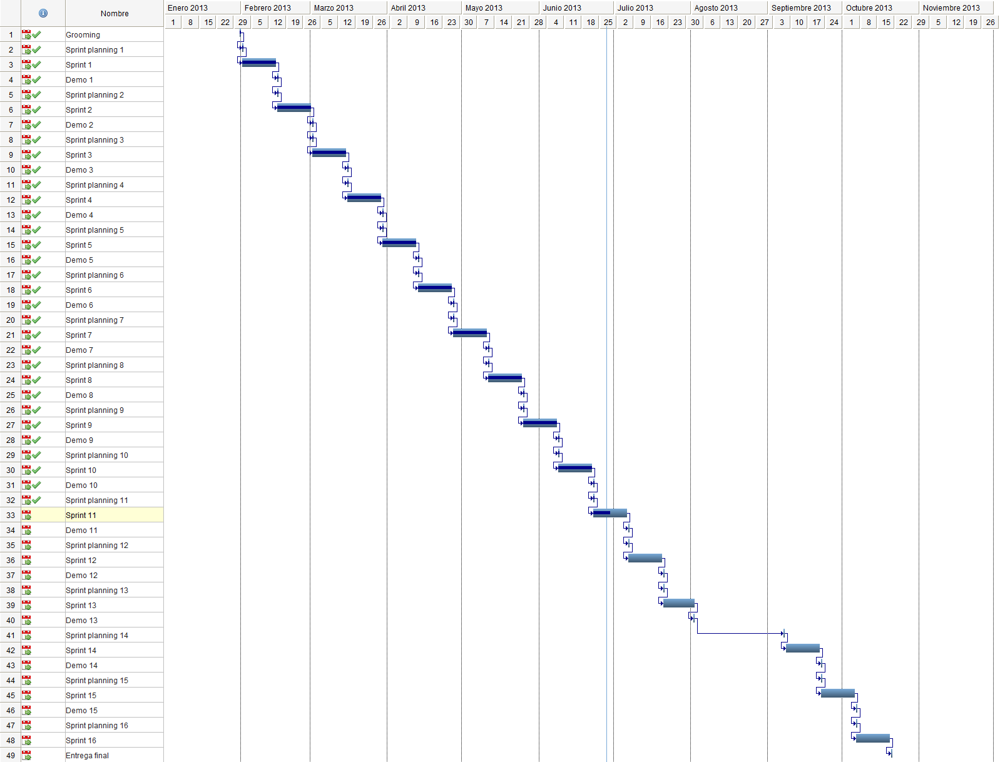

StreamUPC
Un nou concepte de col·laboració
Client
Client: UPCnet
Client: Productes
Client: Necessitats
Projecte
Projecte: Metodologia
Projecte: Pressupost
Recursos
Cost
Humans
11.205 €
Materials
39.83 €
Total
11.244 €
Projecte: Planificació

Projecte: Abast
Projecte: Sostenibilitat i responsabilitat social
LOPD
Mal ús del sistema
Especificació
Especificació: Històries d'usuari
Especificació: Model conceptual
Arquitectura
Segueix patrò 3 capes, però no disposa de capa de dades ja que no té persistència
Arquitectura: Presentació
Arquitectura: Domini
Arquitectura: Model de desplegament
Demostració
Conclusions
Enllaços